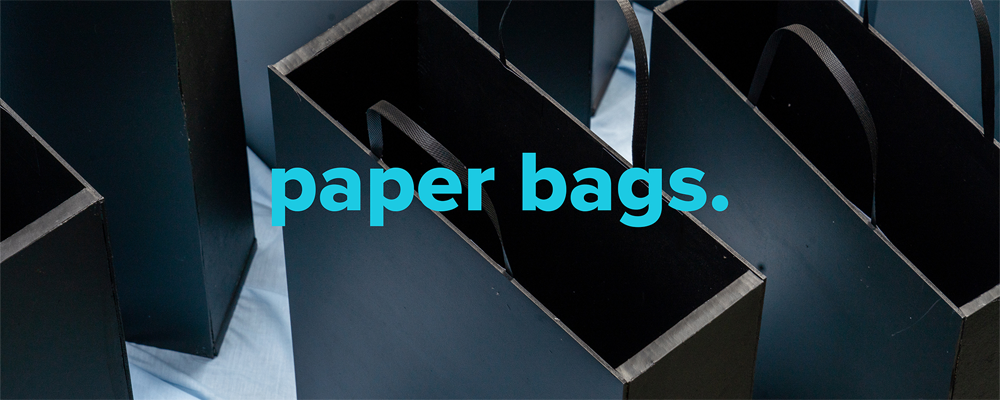
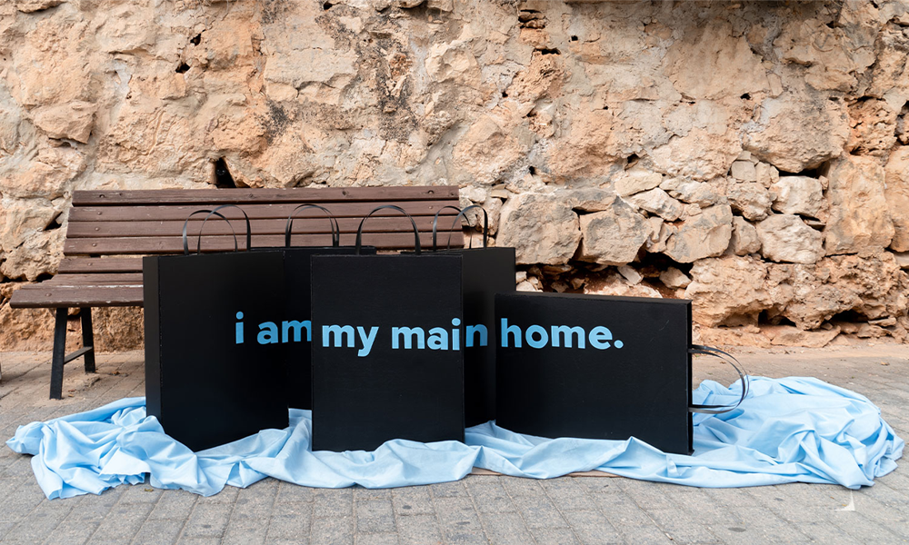
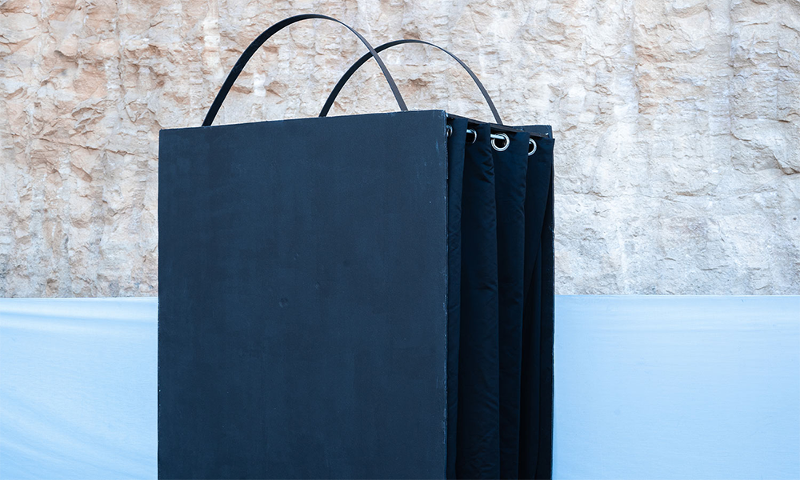
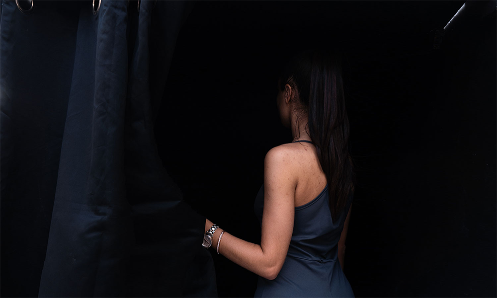
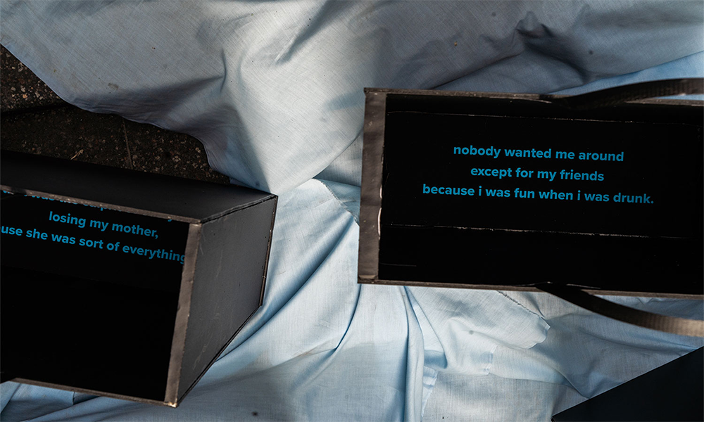

a project submitted as part of my dissertation project. "A New Reality: Exposing Homelessness in Malta through Infographic Installations"
Part of Ctrl Z - a collective digital arts exhibition, held online
“paper bags.” is a series of installations based on Lisa’s experience of homelessness. The three installations display aspects of her personal experience, as a set of events led to her storing all her belongings in paper bags. The presentation of her individual narrative reflects the importance of the single story, exposing specific experiences as opposed to viewing the homeless merely as numbers.
These installations seek to encourage viewers to interact with the pieces in order to take action and fight the apathy and distance often associated with interacting with the homeless.
"self." features 5 papers bags with a distorted message, only visible from one vantage point.
 "loss." presents a large paper bag structure where viewers crouch down in the dark to listen to the audio excerpts.
"abuse." showcases a number of verbatim phrases that depict fragments from Lisa’s experience, printed inside paper bags. It is up to the viewer to peer inside and piece together the narrative.